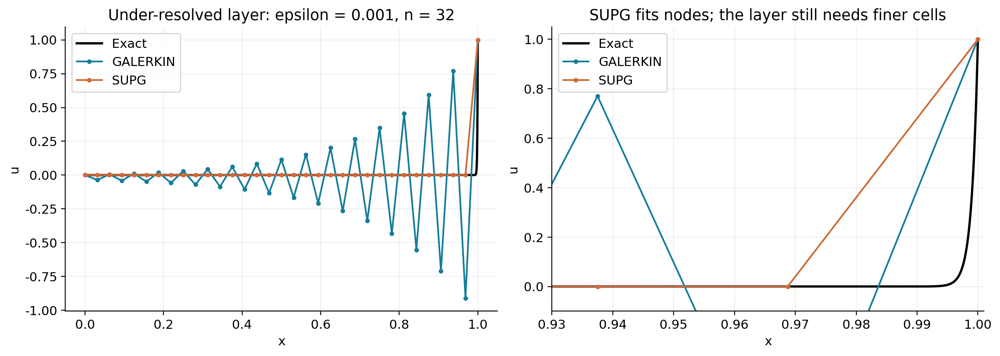
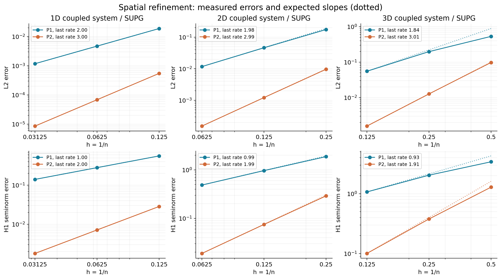
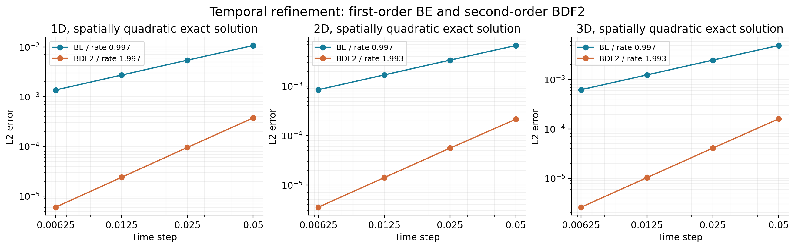
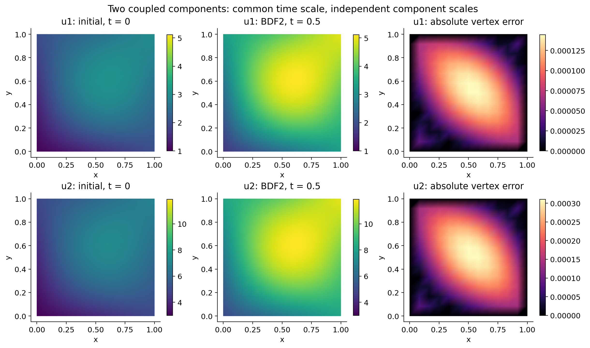

先不考虑空间移动
d ut + cu = f
这就是一个单变量常微分方程：本地反应消耗 cu，外部源补入 f。
Convection · Diffusion · Reaction ／ 对流 · 扩散 · 反应
用一条容易理解的主线，说明多维、向量、含时 CDR（对流—扩散—反应）方程如何变成 FEALPy 可以求解的线性系统。
01 · 从一个位置开始
这就是一个单变量常微分方程：本地反应消耗 cu，外部源补入 f。
当 u<15 时浓度增长；当 u>15 时浓度下降；最后趋向平衡值 15。
高浓度向低浓度摊开，削峰填谷。
水流搬运整团物质，固定点接收新的上游水团。
物质在当地被消耗、生成，或在多个分量之间转化。
从体系外加入或抽走物质。
加入空间作用后，每个位置的这本“账”才会互相联系。容量系数 d 越大，同样的净作用引起的变化越慢。
02 · 两种空间作用
梯度给出流动方向；散度比较一个小区域四周“进来多少、出去多少”。低谷处净流入为正，浓度上升。
固定观察一个位置时，下一刻到达的是上游水团。它不是凭空产生物质，而是空间搬运造成的局部变化。
03 · 从收支到方程
右边依次对应扩散净流入、对流、反应和外部源。
正负号来自移项。扩散项仍然表示周围流量的净收支。
微分方程说明内部怎样变化；初值和边界条件把具体问题补充完整。
04 · 弱形式
P1 有限元使用相连的小线段或三角形平面。函数连续，但导数可以在单元边界跳变。
测试函数在 Dirichlet 边界为零，边界项消失。弱形式不要求近似函数拥有处处存在的二阶导数。
05 · 网格、基函数与未知量
一维 P1 单元有两个节点，因此有两个标量基函数。每个基函数在自己的节点取 1，在另一个节点取 0。
两个物质 × 两个节点，未知量就是四个节点值：
06 · 空间离散
空间变量已经通过积分进入矩阵条目，剩下的是节点值随时间变化的常微分方程组。
07 · 时间推进
U̇ⁿ⁺¹ ≈ (Uⁿ⁺¹ − Uⁿ) / Δt
只需要一个历史值，时间精度一阶。
U̇ⁿ⁺¹ ≈ (3Uⁿ⁺¹ − 4Uⁿ + Uⁿ⁻¹) / (2Δt)
使用两个历史值，时间精度二阶。
08 · 多分量耦合
反应矩阵的第 r 行描述第 r 条方程；第 s 列描述影响来自第 s 个分量。
若有 m 个物质、每个物质有 N 个节点值，最终未知向量长度就是 mN。
C = [ 2 −1; −1 2 ]
设标量空间质量矩阵为 S，反应部分就扩展为：
R = [ 2S −S; −S 2S ]
第一块行同时含 U₁、U₂，因为第一种物质的变化受两种物质共同影响；两块方程必须一起求解。
09 · 连续问题的适定性
给定合理的系数、初值、边界和源项，至少能找到一个满足弱形式的解。
同一组数据不会对应两个不同答案，数值求解才有明确目标。
输入只有小变化时，解也只发生可控的小变化。
正扩散提供核心控制；反应与速度散度还需满足合适条件。连续方程适定、离散矩阵条件数、强对流振荡是三个不同层面的问题。
10 · 强对流

单元 Péclet 数比较一个网格单元内的对流与扩散。
本项目示例取 a=0.001、|b|=1、h=1/32，得到 Pe=15.625>1，属于明显的对流占优。
真实解仍可单调变化，但普通 Galerkin（伽辽金）方法在粗网格上可能出现非物理锯齿。
稳定性与解析精度是两个问题：没有振荡，不等于薄边界层已经被网格充分解析。
11 · SUPG 稳定化
SUPG：流线迎风彼得罗夫—伽辽金法
只有离散解没有满足原方程时，残差项才会发挥作用；精确解代入时残差为零，所以它仍与原方程一致。
沿水流方向增加适量数值耗散，使有效 Péclet 数降低，压住节点间来回摆动。
它能抑制非物理振荡；但不会增加网格自由度。若要准确看清很薄的边界层，仍需要足够细的网格。
12 · 数值验证

平滑问题中，P1 接近 L² 二阶、梯度一阶；P2 接近 L² 三阶、梯度二阶。

后向欧拉（BE）约一阶，二阶后向差分公式（BDF2）约二阶。
13 · 从数学到 FEALPy
form.add_integrator(
ScalarDiffusionIntegrator(coef=a)
)
form.add_integrator(
ScalarConvectionIntegrator(coef=b)
)
form.add_integrator(
ScalarMassIntegrator(coef=C[i, j])
)
A = BlockForm(forms).assembly()程序阅读也沿着同一条线：先认出数学项，再找负责该项的有限元对象，最后看它怎样进入块矩阵和时间步。
14 · 计算结果

求解器输出每个分量的节点值，并写入 VTU（VTK 非结构网格）文件；PVD（ParaView 数据集合）文件把多个时刻连接成时间序列。
ParaView 用于观察场的空间分布和时间演化。误差仍由有限元函数在积分点上计算，不能只凭颜色图判断。
结论
局部收支给出方程，弱形式把它交给有限元；基函数生成矩阵，时间格式推进节点值，多分量通过块系统共同求解，稳定化与验证让结果真正可信。
1–3 维、多个耦合分量、一次/二次有限元、后向欧拉/二阶后向差分、伽辽金/SUPG 稳定化。
空间与时间收敛、强对流对比、边界与残差检查、VTU 读回。
线性问题、正标量扩散与容量、盒形区域、全 Dirichlet 边界、均匀时间步。